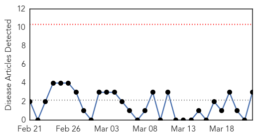
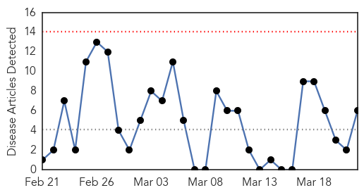
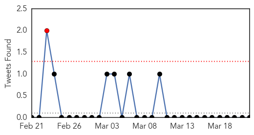
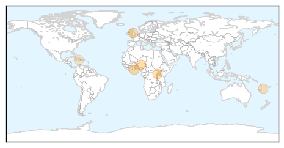

Chikungunya
30-Day Web Trend
0 alerts, 0 warnings

30-Day Twitter Trend
0 alerts, 0 warnings

Article Locations
Article Confidences

Top Articles:
- 0.989
- United Kingdom: Huge increase in chikungunya due to Caribbean and South America travel
- 0.988
- The Lancet Infectious Diseases: Experts warn of potential upsurge in mosquito and tick-borne diseases as UK climate gets warmer
- 0.985
- British visitors to the Caribbean warned about spread of Chikungunya virus
Top Tweets:
-
No tweets found for Mar 22, 2015
Cholera
30-Day Web Trend
0 alerts, 0 warnings

30-Day Twitter Trend
2 alerts, 0 warnings

Article Locations
Article Confidences

Top Articles:
- 0.998
- Cholera Outbreak Confirmed in Kasese
- 0.985
- Another cholera epidemic predicted as G/A records 100 cases
- 0.982
- Lagos, Kano among states with highest leprosy cases
- 0.846
- Life-saving supplies reaching children affected by Cyclone
- 0.817
- Pacific.scoop.co.nz Life-saving supplies reaching children affected by Cyclone
- 0.626
- These Brilliant Innovations Are Bringing Clean Water To People Worldwide
Top Tweets:
-
No tweets found for Mar 22, 2015